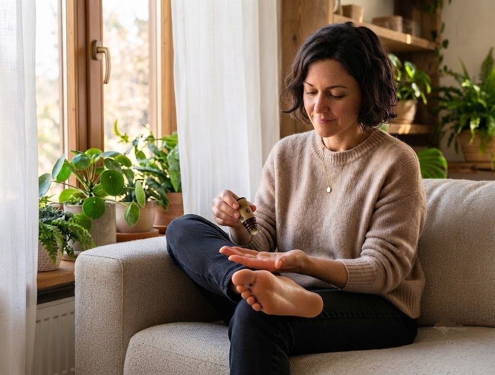

🌿 Lekce 11
masáž, koupel a obklady
Kůže není jen bariéra, ale i brána dovnitř těla. Ukážu vám nejběžnější způsoby povrchové aplikace — masáž, koupel a teplé i studené obklady.

Esenciální oleje pronikají skrz vrstvy kůže až do vnitřního prostředí těla — lokálně působí na pokožku, svaly, měkké tkáně, klouby a kosti. Nosný olej zvlhčuje pokožku a prodlužuje vstřebávání.
Masáž — zahřejte si dlaně třením, naneste nosný olej s 1–3 kapkami esence a masírujte postižené místo nebo celé tělo. Nejčastější místa: dlaně, chodidla, čelo, spánky, krk, hruď, břicho a energetické body.
Masáž chodidel — chodidla jsou nejpropustnějším místem na těle (bez tukových žláz) a mají nejméně citlivou pokožku. Skvělé pro rychlé vstřebání. V mnoha případech zde není nutné oleje ředit. Stačí 1 kapka na každé chodidlo.
Koupel — jeden z nejpříjemnějších způsobů. 3–5 kapek oleje vždy nejdříve rozmíchejte v nosiči — mořské soli, himalájské soli, Epsomské soli, smetaně, mléce nebo nosném oleji. Teprve pak přidejte do vany.
Teplý obklad — při chronických bolestech zad, revmatických bolestech nebo bolestivé menstruaci. Naneste nosný olej s 1–3 kapkami esence a přiložte ručník namočený v teplé vodě na 10–30 minut.
Studený obklad — při akutních zánětech, otocích nebo neurologických problémech. Naneste nosný olej s 1–3 kapkami esence a přiložte látku namočenou ve studené vodě.
Povrchová aplikace ovlivňuje nejen pokožku, ale i svaly, klouby, prokrvení a vnitřní orgány.
Chodidla se vstřebávají nejrychleji, stačí 1 kapka na chodidlo.
Teplý obklad pomáhá na chronické bolesti, studený na akutní záněty a otoky.
Další lekce: Jak si vůní zklidnit hlavu za pár vteřin — čichová kotva.